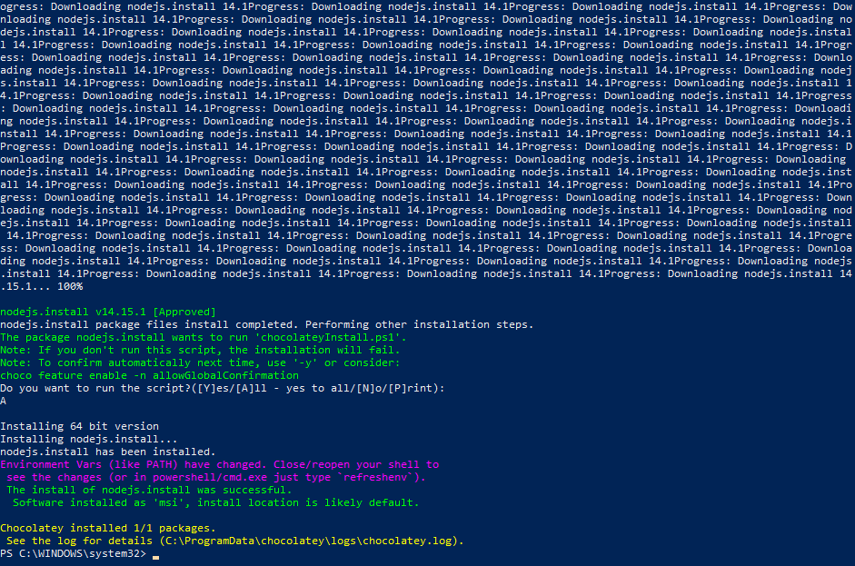

Angularin asentaminen Windowsiin
Angular on rakenteellinen kehys dynaamisille verkkosovelluksille. Sen avulla voit käyttää HTML: ää mallikielenä ja voit laajentaa HTML: n syntaksia ilmaisemaan sovelluksesi komponentit selkeästi ja ytimekkäästi. AngularJS: n tietojen sitominen ja riippuvuussyöttö eliminoivat suuren osan koodista, jonka muuten joudut kirjoittamaan.
Node.js käyttää tapahtumavetoista, ei-estävää I / O-mallia, joka tekee siitä kevyen ja tehokkaan. Node.js on avoimen lähdekoodin, alustojen välinen ajonaikainen ympäristö palvelinpuolen ja verkkosovellusten kehittämiseen.
npm on Node JavaScript -alustan paketinhallinta. Se asettaa moduulit paikoilleen, jotta Node voi löytää ne.
Chocolatey tuo käyttöön todellisen paketinhallinnan käsitteet, joiden avulla voit hallita versiota ja asennustilaa, parantaa varastonhallintaa ja muita ominaisuuksia.
